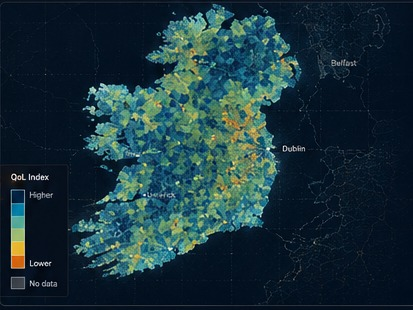

Transparent indicators
Every measure has a definition, source, geography and documented processing step.
SEL-001 · National cartographic publication series
A transparent, place-based index for understanding the conditions that shape everyday life across the Republic of Ireland.

MAP 1.01Ireland Quality of Life Index
QoLI brings together social, economic, environmental and spatial measures into a reproducible evidence base for comparison, planning and public conversation.
Every measure has a definition, source, geography and documented processing step.
Small-area results reveal patterns that national averages and administrative boundaries can hide.
Data, maps and processing logic are designed to be inspected, reproduced and improved.
Seven domains
Each domain is a distinct view of quality of life. Together they form the national composite index.
Community infrastructure, amenities and social connection.
Explore domain ↓ 02Blue space, green space and natural heritage accessibility.
Explore domain ↓ 03Healthcare accessibility and wellbeing indicators.
Explore domain ↓ 04Housing affordability, quality and residential security.
Explore domain ↓ 05Public transport, commuting and rail accessibility.
Explore domain ↓ 06Income, education, deprivation and employment.
Explore domain ↓ 07Street connectivity and the pedestrian environment.
Explore domain ↓Methodology
A consistent processing pipeline turns source datasets into a normalised, comparable Quality of Life score.
Publication catalogue
From the master index to domain maps, geography, spatial patterns and reference layers.
Composite QoLI score across 18,919 Census Small Areas.
View legend ↗Indicator library
Official indicator cards use the same clear structure across the index and its seven domains.
Walking access and service frequency to public transport stops using GTFS schedules.
Distance + Frequency0–1 normalisedPublic parks, forests and recreational green infrastructure accessible within each Small Area.
Accessibility0–1 normalisedRelative housing costs and residential conditions across the national small-area fabric.
Cost + Quality0–1 normalisedOfficial legend design
Every domain uses five classes, from very low to very high. The index is designed for both web exploration and ArcGIS publication layouts.
Open resources
Download the publication catalogue, metadata and reproducibility resources for your own analysis.